2026-09-29 · 产品样式统一验收
新问答采集 → 证据验证 → 根因诊断 → 风险分流 → 人工复核
以下为真实 Vue 页面在隔离浏览器中的验收截图，API 使用模拟数据；不是设计图，也不是实际业务问答或业务准确率校准。后台状态、权限、迁移和并发逻辑另有 SQLite / PostgreSQL 自动化测试。代码位于 codex/knowledge-ops-v12。
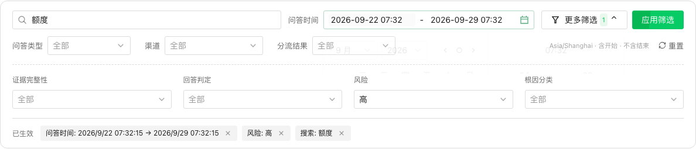
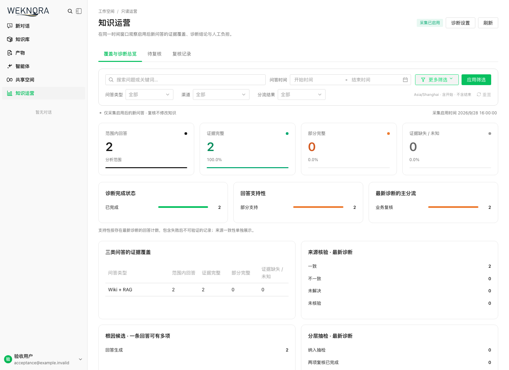
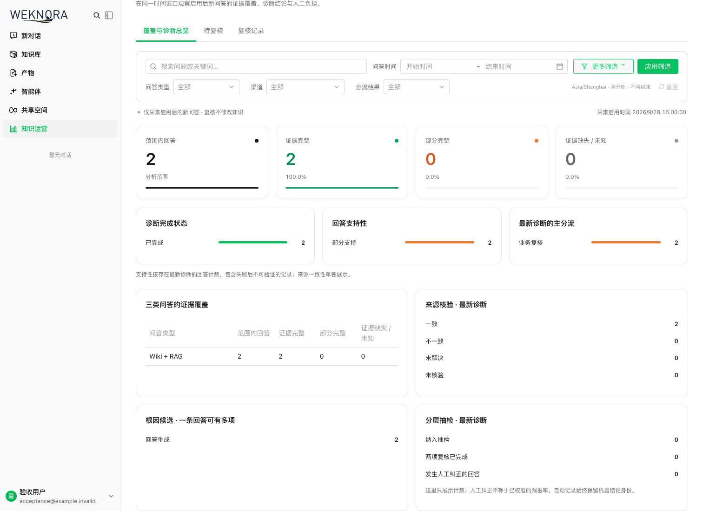
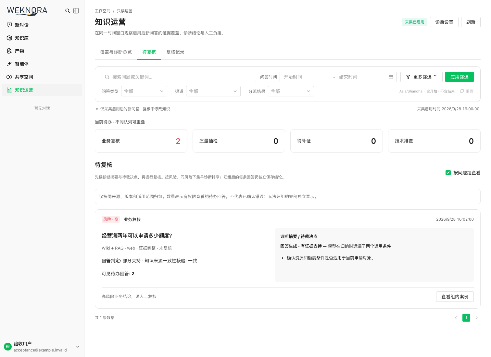
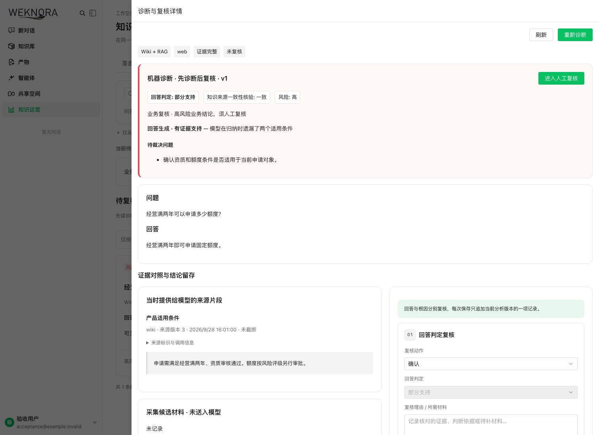
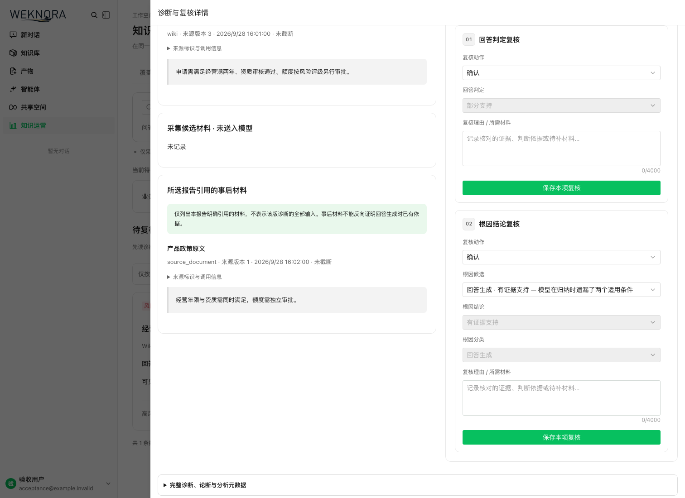
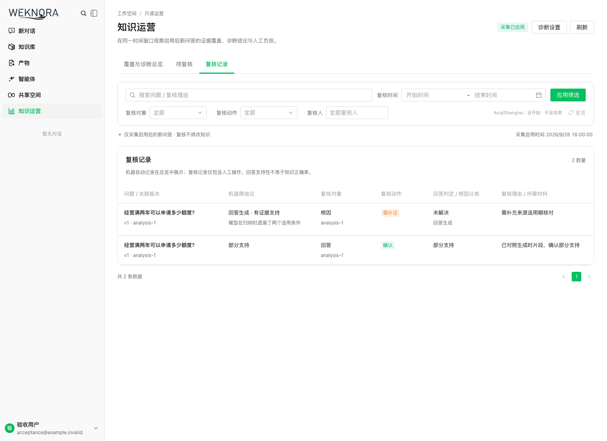
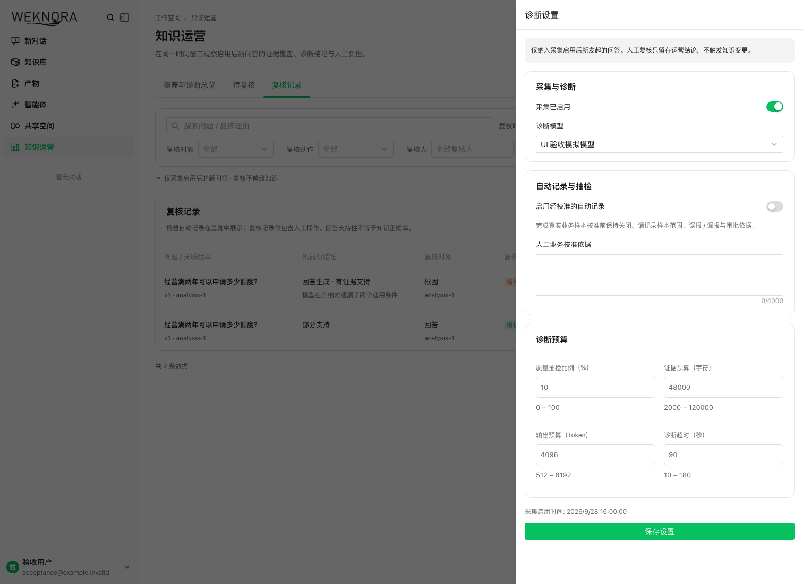
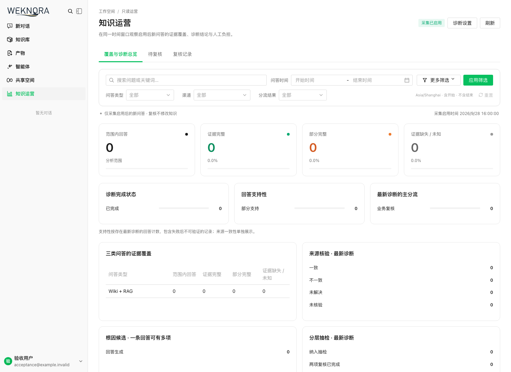
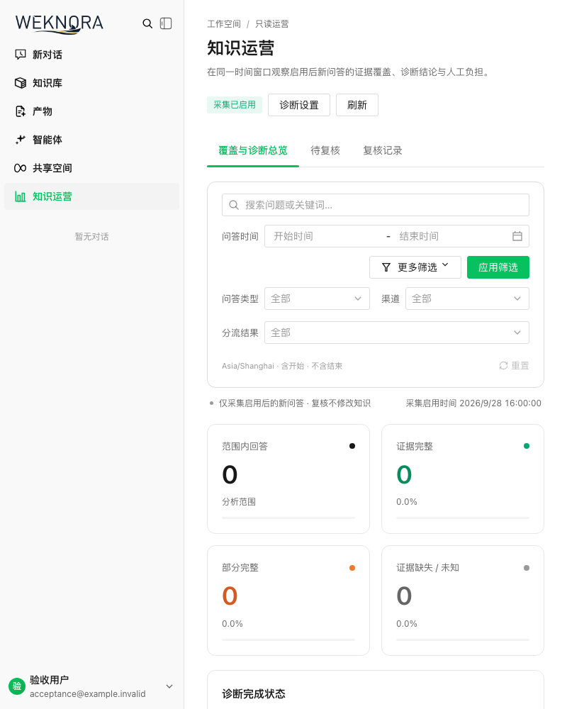
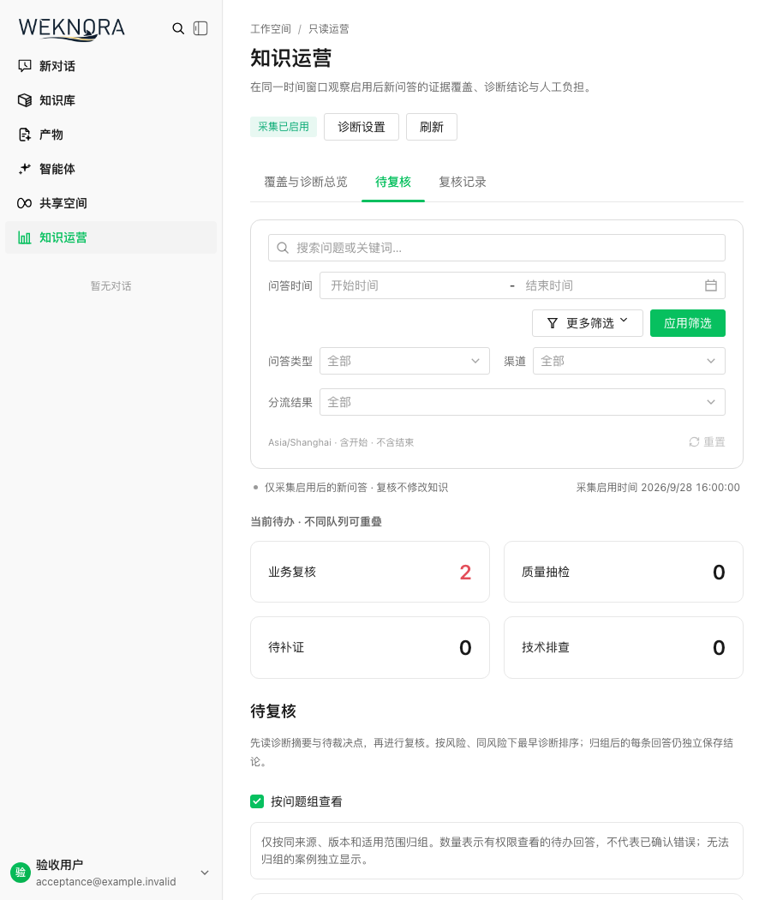
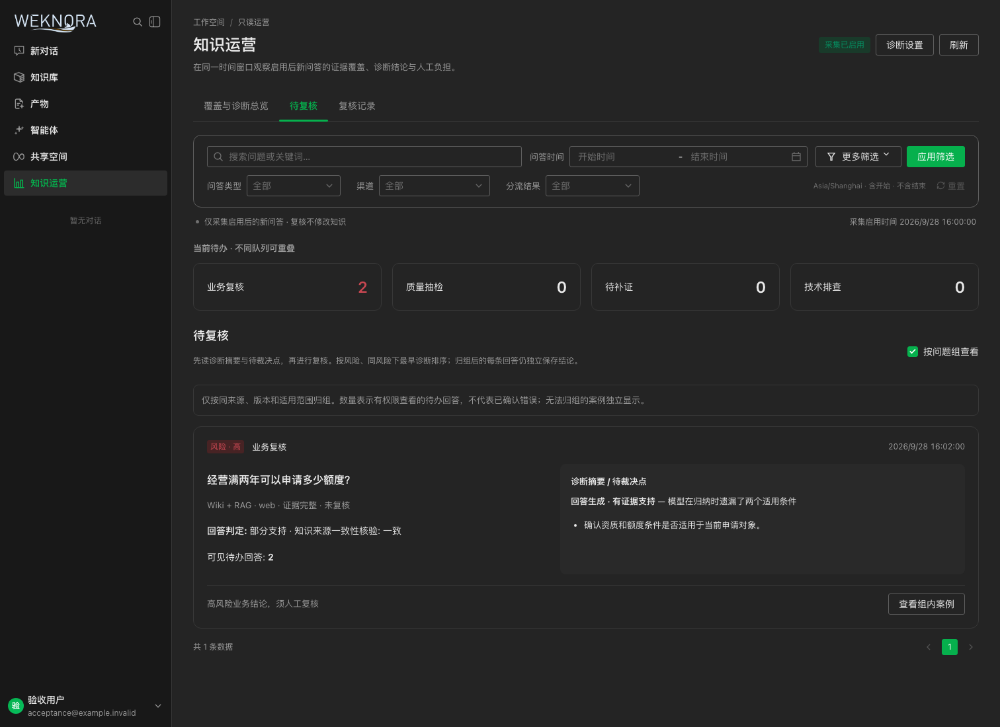